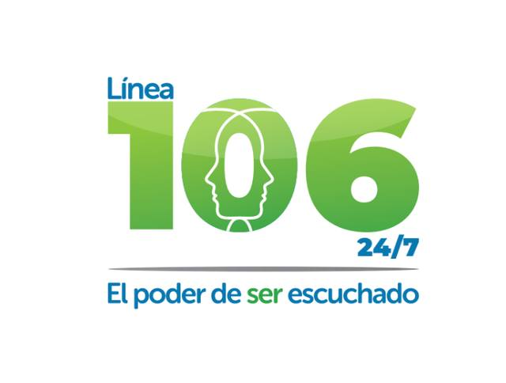
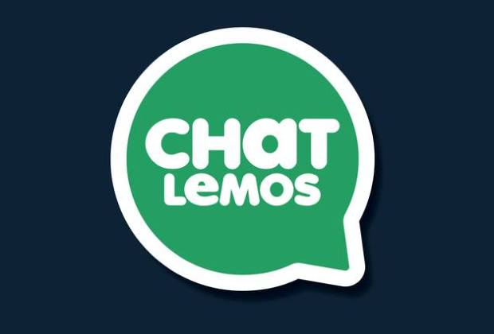
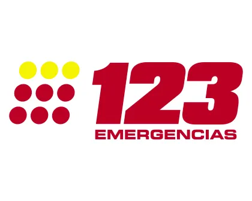

El Poder de Ser Escuchado
📍 Atención psicológica gratuita.
🕐 Disponible según la ciudad.
💬 Chat y teléfono.
☎️ 106 - 300 754 8933

No estás solo. Si estás pasando por una situación difícil...
📍 Atención psicológica gratuita.
🕐 Disponible según la ciudad.
💬 Chat y teléfono.
☎️ 106 - 300 754 8933
📍 Barranquilla.
💬 Atención por chat o videollamada.
👨⚕️ Psicólogos profesionales.
🆓 Gratuito.
🚨 Si en este momento:
• Piensas hacerte daño.
• Piensas hacer daño a otra persona.
• Sientes que has perdido el control.
• Tu vida o la de alguien está en peligro.
Llama inmediatamente al 123 o acude al servicio de urgencias más cercano.
☎️ 123

La Línea 106 o WhatsApp "300 754 8933" es un servicio de orientación en salud mental que brinda información, apoyo inicial y acompañamiento frente a situaciones que pueden afectar el bienestar emocional.
Llama a la 106 o escríbete al WhatsApp siempre que necesites apoyo emocional, estés en
crisis, te sientas en riesgo o simplemente necesites hablar con un profesional de salud
mental.
Es gratuita, confidencial y funciona 24/7.

ChatLemos es la estrategia de salud mental implementada por la Alcaldía de Barranquilla, liderada por el alcalde Alejandro Char, que brinda atención psicológica gratuita a través de WhatsApp y videollamadas
Atiende casos de ansiedad, depresión, ideación suicida y conflictos familiares, con un enfoque especial en jóvenes de 12 a 22 años.

El 123 es la línea única de emergencias Nacional, que permite que en un sólo número los colombianos pueden acceder a todos los servicios de emergencia y seguridad que ofrece el Estado gratuitamente las 24 horas del día todos los días del año.
Para atender situaciones que pongan en riesgo la vida o la integridad física de las personas.